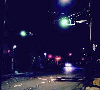

J a m e s B r u n t
photo grapher
J a m e s B r u n t
1994年 誕生
2010年 デザイナーに憧れ海外へデザイン留学
2011年 ある photographer との出会いを機にphotographer へ転身
2013年 ボストン州立大学フェアジンクス校写真学部卒業。
写真家・水越武氏に師事し撮影に同行する。
それに並行して、8×10インチの大型カメラを使い
エスキモーとアリュートの家族やポートレート、
そして極北の自然の撮影をはじめる。
大型カメラで撮影したネガからプラチナフリントを制作した。
2015年 フォト・ギャラリー・インターナショナルより初の写真集
「Nettoyer」を発表
2016年 日本に帰国し独立フリーランスとして活動を開始
1994 Born in tokyo prefecture, Japan.
2010 Hope for designer to study abroud.
2011 When he met that photographer,change to job
2013 Graduated from the University of Boston Fairjinx
in photographer. Studied under Takeshi izukoshi,
a renowned Japanese nature photographer, and
traveled to many place Simultaneously James began
his own photographic projects and traveling to
arctic and sub-arctic regions to photograph indigenous
peoples and landscape with his 8×10 large format camera.
All prints are made on hand-coated platinum.
2015 His first photography book titled
“ Nettoyer” was published from Photo Gallery International.
2016 He came back to Japn and independence. He began to activity as freelan
- 

■ 広告・Ｃ Ｍ（ 出演/ 撮影） ■
2 0 1 9 年 D D . f a l e 「新たなる世界」 出演
2 0 1 9 年 J - P O W E R 「熱人」 出演
2 0 1 9 年 w a s s a m o d e 「わさもん」 キービジュアル撮影
2 0 1 9 年 ハウステンボス「光の王国」 キービジュアル撮影
■ 雑誌 ■
2 0 1 6 年 2 月2 7 日 扶桑社「 N u m e r o T O K Y O 」2 1 世紀少女
2 0 1 6 年 3 月 7 日 文藝春秋「 C R E A 」アフリカで自分を解き放つ
2 0 1 6 年 4 月2 7 日 扶桑社「 N u m e r o T O K Y O 」アフリカの大地に息づくファッションに魅せられて
2 0 1 6 年 1 2 月1 9 日 日経ビジネス「 次代を創る1 0 0 人 」
■ 写真展示 ■
2 0 1 6 年 6 月 個展「 ブリキのジェームス展 」 @ B u r i k i n o Z y o r o
2 0 1 6 年 8 月 K a n z a n g a l l e r y ジェームス特別展示 「 N e t t o y e r 」 @ K a n z a n g a l l e r y
2 0 1 7 年 9 月 ジェームス写真展「 N e t t o y e r 」 @ そごう千葉店
2 0 1 8 年 4 月 ジェームス× N A K E D 「S i n g - S i n g 」＆ ジェームス写真展「 N e t t o y e r発売記念個展 」 @ 西武渋谷店
2 0 1 8 年 5 月 ジェームス写真展「 N e t t o y e r 」 @ 梅田阪急
2 0 1 8 年 6 月 ジェームス写真展「 N e t t o y e r 」 @ 大丸札幌店
2 0 1 8 年 8 月 ジェームス写真展「 N e t t o y e r 」 @ 西武池袋店
2 0 1 8 年 8 月 ジェームス写真展「 N e t t o y e r 」 @ そごう広島店
2 0 1 8 年 9 月 ジェームス写真展「 N e t t o y e r 」 @ 松坂屋名古屋店
2 0 1 9 年 D D . f a l e 「新たなる世界」 出演
2 0 1 9 年 J - P O W E R 「熱人」 出演
2 0 1 9 年 w a s s a m o d e 「わさもん」 キービジュアル撮影
2 0 1 9 年 ハウステンボス「光の王国」 キービジュアル撮影
2 0 1 6 年 2 月2 7 日 扶桑社「 N u m e r o T O K Y O 」2 1 世紀少女
2 0 1 6 年 3 月 7 日 文藝春秋「 C R E A 」アフリカで自分を解き放つ
2 0 1 6 年 4 月2 7 日 扶桑社「 N u m e r o T O K Y O 」アフリカの大地に息づくファッションに魅せられて
2 0 1 6 年 1 2 月1 9 日 日経ビジネス「 次代を創る1 0 0 人 」
2 0 1 6 年 6 月 個展「 ブリキのジェームス展 」 @ B u r i k i n o Z y o r o
2 0 1 6 年 8 月 K a n z a n g a l l e r y ジェームス特別展示 「 N e t t o y e r 」 @ K a n z a n g a l l e r y
2 0 1 7 年 9 月 ジェームス写真展「 N e t t o y e r 」 @ そごう千葉店
2 0 1 8 年 4 月 ジェームス× N A K E D 「S i n g - S i n g 」＆ ジェームス写真展「 N e t t o y e r発売記念個展 」 @ 西武渋谷店
2 0 1 8 年 5 月 ジェームス写真展「 N e t t o y e r 」 @ 梅田阪急
2 0 1 8 年 6 月 ジェームス写真展「 N e t t o y e r 」 @ 大丸札幌店
2 0 1 8 年 8 月 ジェームス写真展「 N e t t o y e r 」 @ 西武池袋店
2 0 1 8 年 8 月 ジェームス写真展「 N e t t o y e r 」 @ そごう広島店
2 0 1 8 年 9 月 ジェームス写真展「 N e t t o y e r 」 @ 松坂屋名古屋店
お仕事のご依頼・ご相談など、お気軽にご連絡下さい。